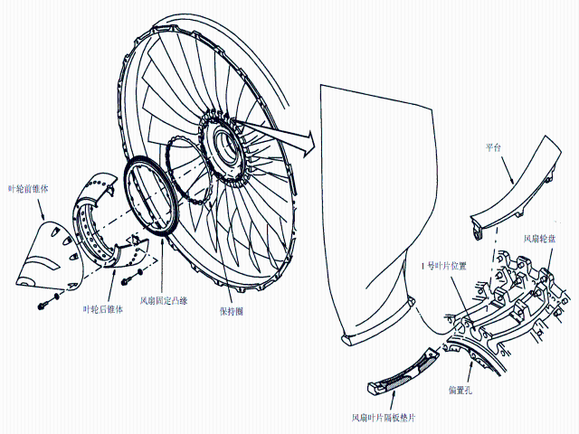

叶轮前锥体和后锥体是导引发动机进气气流的空气动力的整流 罩。
有 24 片宽叶弦，钛风扇叶片。在每一风扇叶片下面有一块隔板垫片把叶片固定在正确的径向位置。 拆下隔板垫片就能较容易拆卸风扇叶片。在叶片之间的平台使气流平滑流动。风扇的固定凸缘和保持圈固定风扇叶片隔板垫片和平台。
在拆下或更换风扇叶片时，记录叶片的位置和序号。做下面这些工作：
在拆下的同一位置安装叶片，保持平衡。
在更换叶片时，计算附加的叶片位置和动量重量修正值。
用平衡重量螺钉平衡发动机。在后叶轮上安装平衡重量螺钉。
偏置孔让你安装叶轮锥体和风扇固定凸缘在唯一的正确角位置。球形压痕表明这些偏置孔。在这些部件上有偏置螺栓孔或螺纹：